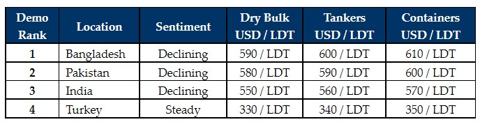

inWeekly Demolition Reports03/01/2022

With markets down, a quieter festive period has ensued with no fresh (market or otherwise) sales having reportedly taken place and a calmer period of consolidation transpired in the last week of 2021, as the industry reflects on an extraordinary year gone by.
The sub-continent markets more than doubled since the lows seen at the height of the Coronavirus pandemic last year, as levels managed to hit decade long highs of about USD 650/LDT, up from the lows of USD 260/LDT or so, seen during the height of the pandemic halfway through 2020 – eventually transpiring into gains of almost USD 400/LDT!
Even though levels have crushingly cooled off by almost USD 50/LDT since the peaks seen in September / October of this year, we are still seeing levels above USD 600/LDT, in what remains a decade-long high for the ship recycling industry in the Indian sub-continent.
Turkish levels too displayed impressive improvements during the second half of 2021, with levels suddenly jumping USD 65/Ton from the average USD 300/Ton figure. While no market sales have reportedly taken place at these highs, we have certainly seen the Aliaga Buyers not starving for tonnage through the year either, given the number of cruise / offshore vessels delivered here for strictly green (or otherwise) recycling.
Overall, the hope and (general) consensus is that these prices should endure going well into 2022 Q1, such is the (overall) bullish state of steel prices at present – despite a couple of currencies still trembling with inconsistencies and the fact that China is importing, not exporting steel. Construction projects and growth throughout the sub-continent also means demand remains firm and we will likely see prices maintained (for the short term at the very least).
The big question for the New Year is, which sector will be the primary supply of ships for 2022? Many are expecting the beleaguered Tanker sector to turn around, whilst dry Bulk and Containers continue to impress. So, the question on everyone’s mind is whether we are going to continue see a shortage in supply despite recyclers finally being eager for tonnage?
For week 54 of 2021, GMS demo rankings / pricing for the week are as below.

📄 Download PDF: 2022-01-03PaE_org.pdfSource: GMS,Inc. (https://www.gmsinc.net/gms_new/index.php/web)